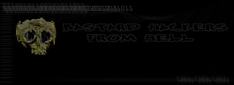

 Welcome to Hell
admin: index.htm is now index.old.htm
shoutz: hell, lyn, g0t-milk, revcane, omerta, Sparky, antijeriatric, Landers the Military Man.
f.u.'sgo2: #tx2600:{this includes} badmofo, zylone, and mitchell. this time it doesnt include the rest, but it doesnt exclude them either. The reasoning for my dislikeing of these "2600" members is that they take over channels and shit, how cool right? damn winblows kiddies at it again... this time with #systemcrash, look at how kool they are.
Zylone: I bet Ive setup more BSD boxes than you. RX: But can you use them? *Zylone shrugs